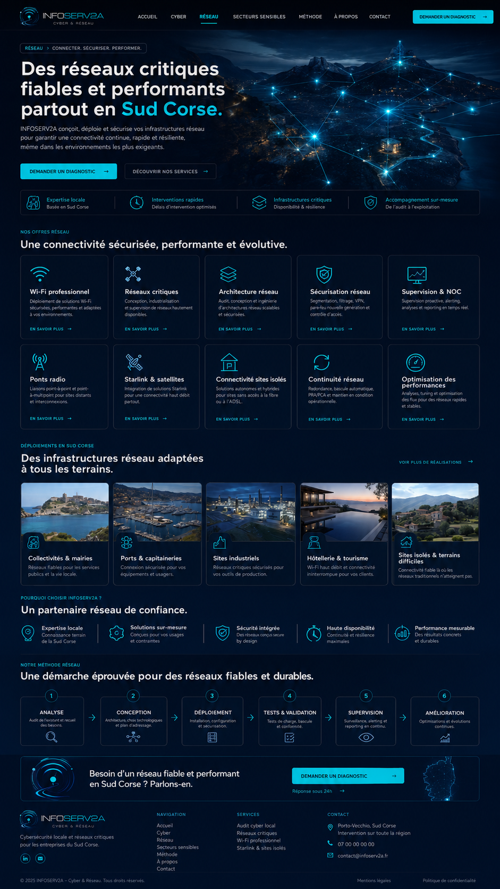

Wi-Fi professionnel
Déploiement de solutions Wi-Fi sécurisées, performantes et adaptées à vos environnements.
En savoir plus
Réseau > connecter. sécuriser. performer.
INFOSERV2A conçoit, déploie et sécurise vos infrastructures réseau pour garantir une connectivité continue, rapide et résiliente, même dans les environnements les plus exigeants.
Nos offres réseau
Déploiement de solutions Wi-Fi sécurisées, performantes et adaptées à vos environnements.
En savoir plusConception, industrialisation et supervision de réseaux hautement disponibles.
En savoir plusAudit, conception et ingénierie d’architectures réseau scalables et sécurisées.
En savoir plusSegmentation, filtrage, VPN, pare-feu nouvelle génération et contrôle d’accès.
En savoir plusSupervision proactive, alerting, analyses et reporting en temps réel.
En savoir plusLiaisons point-à-point et point-à-multipoint pour sites distants et interconnexions.
En savoir plusIntégration de solutions Starlink pour une connectivité haut débit partout.
En savoir plusSolutions autonomes et hybrides pour sites sans accès à la fibre ou à l’ADSL.
En savoir plusRedondance, bascule automatique, PRA/PCA et maintien en condition opérationnelle.
En savoir plusAnalyse, tuning et optimisation des flux pour des réseaux rapides et stables.
En savoir plusDéploiements en Sud Corse
Réseaux fiables pour les services publics et la vie locale.
Connexion sécurisée pour vos équipements et usagers.
Réseaux critiques sécurisés pour vos outils de production.
Wi-Fi haut débit et connectivité ininterrompue pour vos clients.
Connectivité fiable là où les réseaux traditionnels n’atteignent pas.
Pourquoi choisir INFOSERV2A ?
Notre méthode réseau
Audit de l’existant et recueil des besoins.
Architecture, choix technologiques et plan d’adressage.
Installation, configuration et sécurisation.
Tests de charge, bascule et conformité.
Surveillance, alerting et reporting en continu.
Optimisations et évolutions continues.